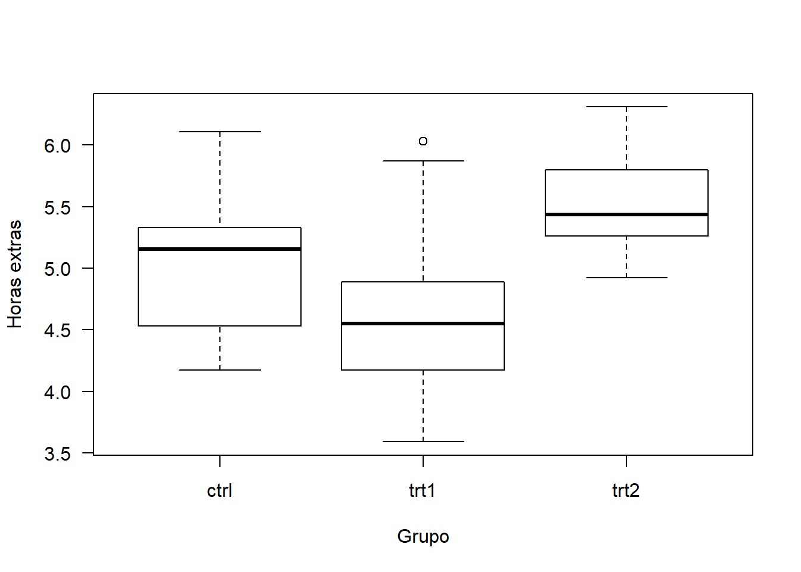
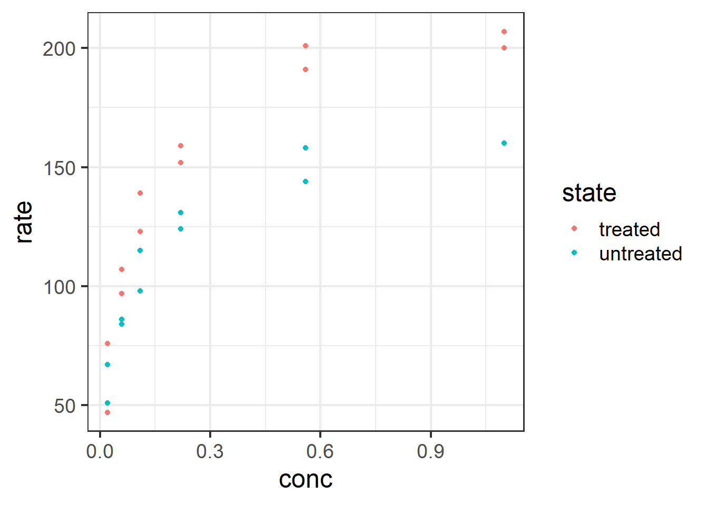
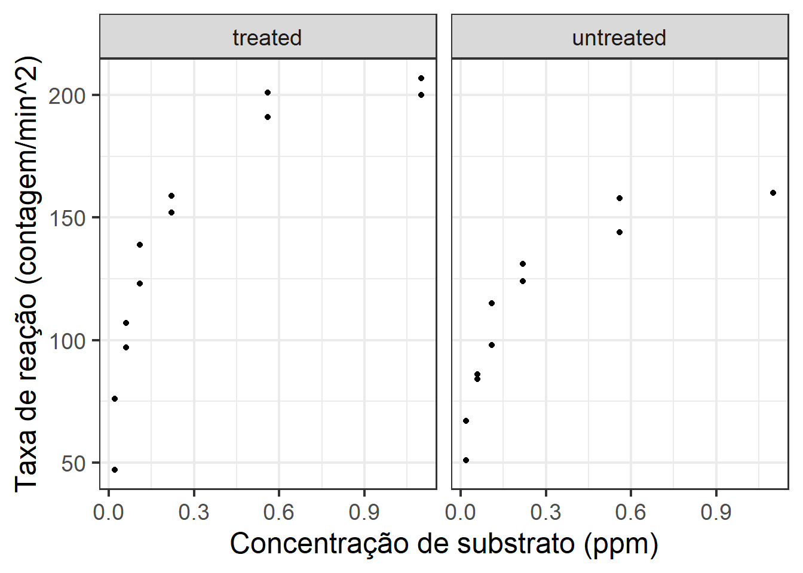
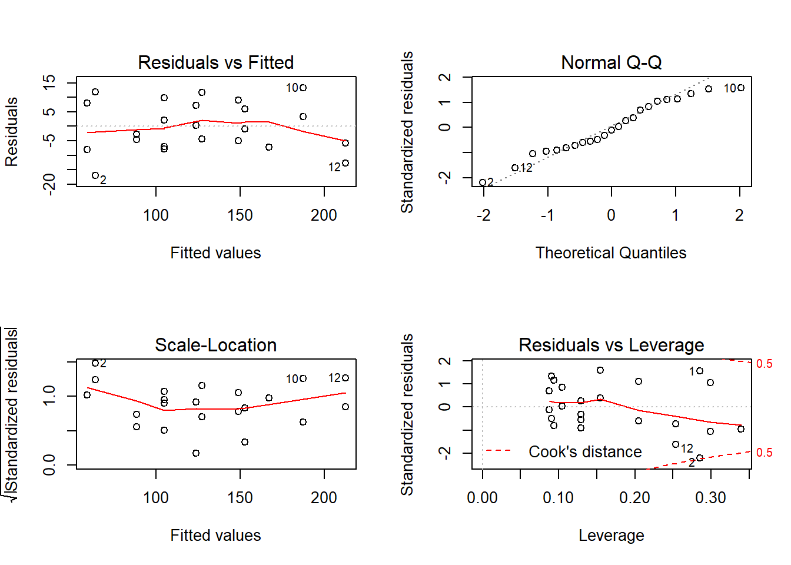
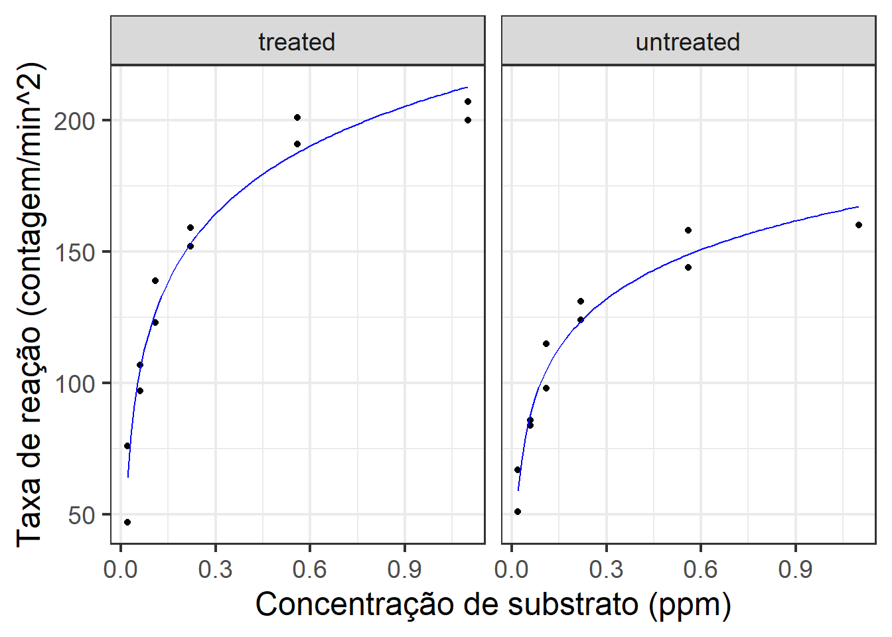
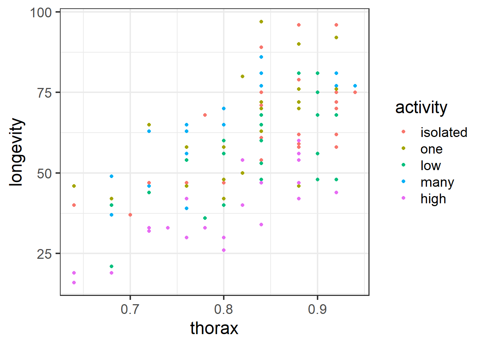
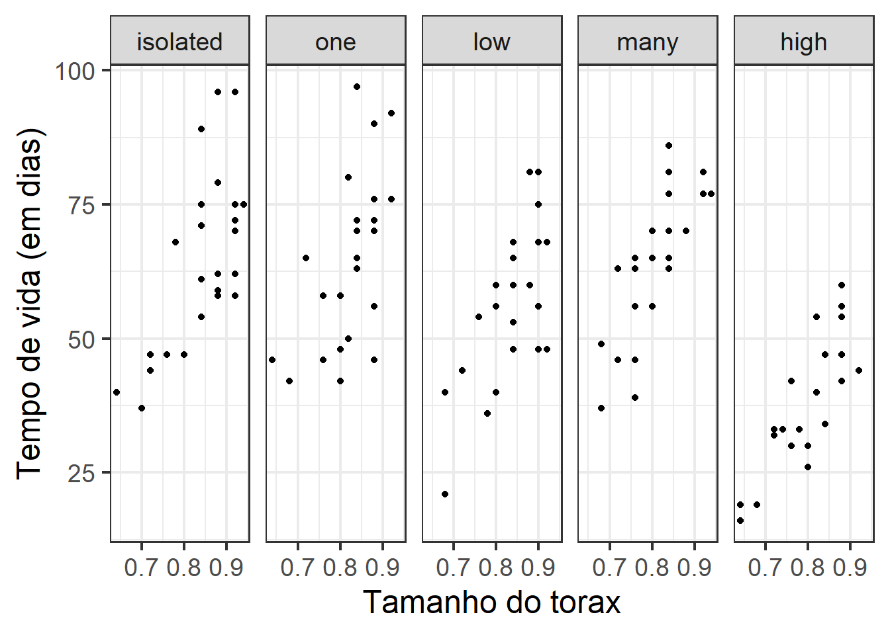
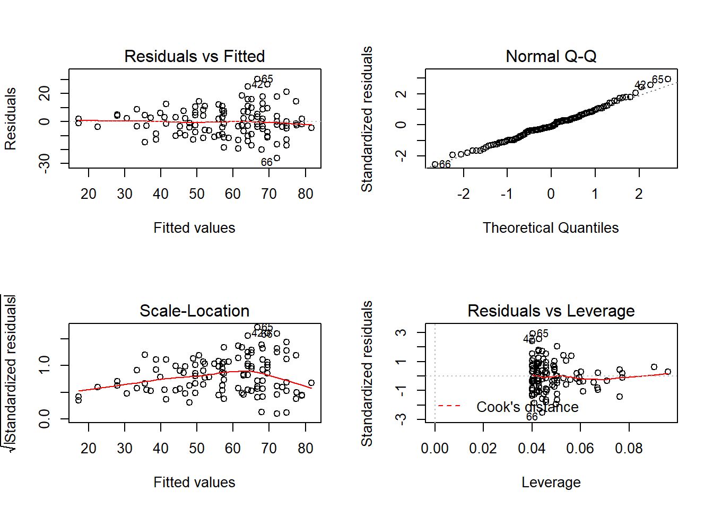
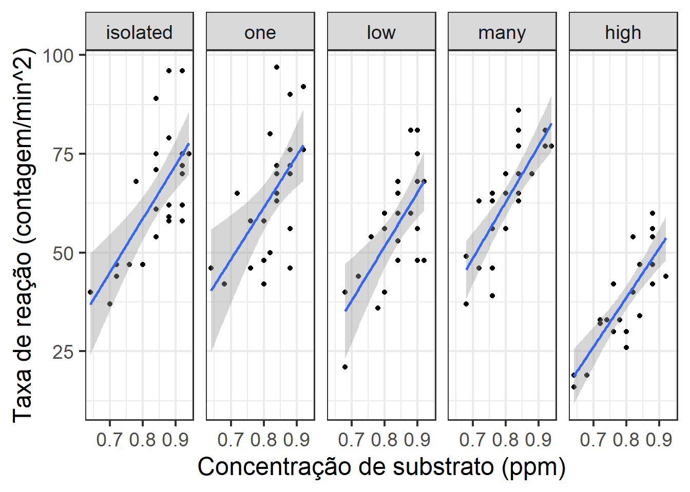
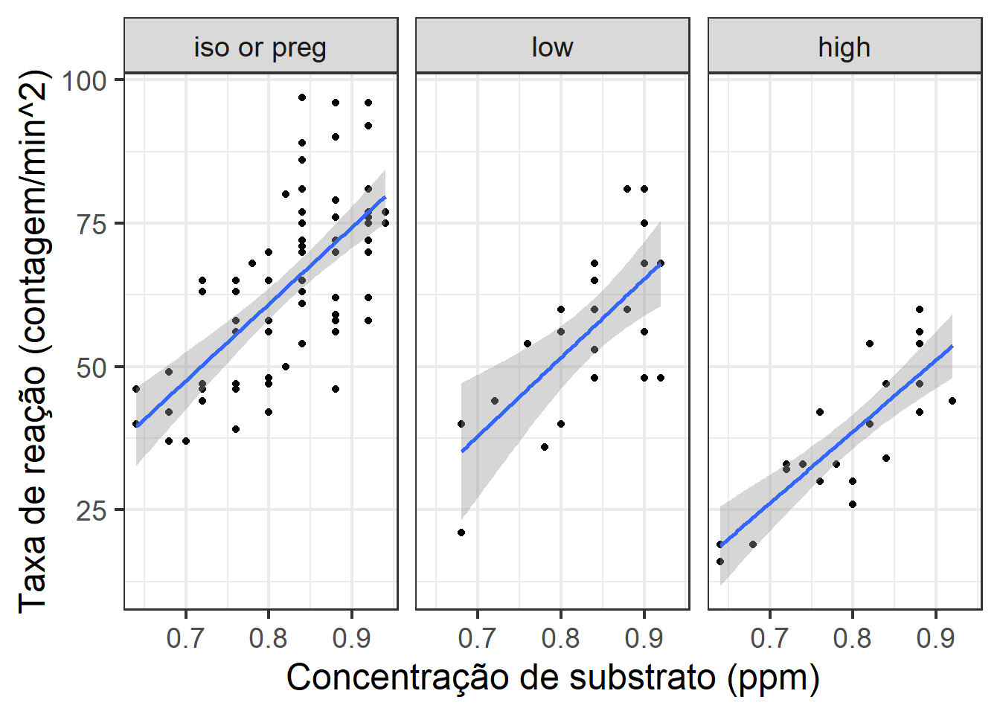

## weight group
## 1 4.17 ctrl
## 2 5.58 ctrl
## 3 5.18 ctrl
## 4 6.11 ctrl
## 5 4.50 ctrl
## 6 4.61 ctrlVamos analisar a produção de massa seca sob as três condições experimentais (controle e dois tratamentos).

## group: ctrl
## Min. 1st Qu. Median Mean 3rd Qu. Max.
## 4.170 4.550 5.155 5.032 5.293 6.110
## --------------------------------------------------------
## group: trt1
## Min. 1st Qu. Median Mean 3rd Qu. Max.
## 3.590 4.207 4.550 4.661 4.870 6.030
## --------------------------------------------------------
## group: trt2
## Min. 1st Qu. Median Mean 3rd Qu. Max.
## 4.920 5.268 5.435 5.526 5.735 6.310Vamos considerar, num primeiro momento, apenas o grupo controle e o grupo com tratamento 1 (trt1)
PlantGrowth2 <- subset(PlantGrowth, group %in% c('ctrl', 'trt1'))
ajuste1 <- lm(weight ~ group, data = PlantGrowth2)
model.matrix(ajuste1)## (Intercept) grouptrt1
## 1 1 0
## 2 1 0
## 3 1 0
## 4 1 0
## 5 1 0
## 6 1 0
## 7 1 0
## 8 1 0
## 9 1 0
## 10 1 0
## 11 1 1
## 12 1 1
## 13 1 1
## 14 1 1
## 15 1 1
## 16 1 1
## 17 1 1
## 18 1 1
## 19 1 1
## 20 1 1
## attr(,"assign")
## [1] 0 1
## attr(,"contrasts")
## attr(,"contrasts")$group
## [1] "contr.treatment"##
## Call:
## lm(formula = weight ~ group, data = PlantGrowth2)
##
## Residuals:
## Min 1Q Median 3Q Max
## -1.0710 -0.4938 0.0685 0.2462 1.3690
##
## Coefficients:
## Estimate Std. Error t value Pr(>|t|)
## (Intercept) 5.0320 0.2202 22.850 9.55e-15 ***
## grouptrt1 -0.3710 0.3114 -1.191 0.249
## ---
## Signif. codes: 0 '***' 0.001 '**' 0.01 '*' 0.05 '.' 0.1 ' ' 1
##
## Residual standard error: 0.6964 on 18 degrees of freedom
## Multiple R-squared: 0.07308, Adjusted R-squared: 0.02158
## F-statistic: 1.419 on 1 and 18 DF, p-value: 0.249Neste caso, o intercepto corresponde à estimativa do peso médio das plantas do grupo controle (5.03). A segunda estimativa apresentada corresponde à diferença no peso médio de plantas submwetidas ao tratamento 1 em relação a plantas do grupo controle (-0.37). A estimativa para o peso médio de plantas submetidas ao tratamento 1 é calculada por 5.03 - 0.37 = 4.66.
Vamos analisar os dados agora usando um teste t de comparação de médias, assumindo variâncias iguais nos dois grupos.
##
## Two Sample t-test
##
## data: weight by group
## t = 1.1913, df = 18, p-value = 0.249
## alternative hypothesis: true difference in means is not equal to 0
## 95 percent confidence interval:
## -0.2833003 1.0253003
## sample estimates:
## mean in group ctrl mean in group trt1
## 5.032 4.661Observe que o resultado do teste, bem como as estimativas apresentadas, são rigorosamente iguais às produzidas pelo modelo de regressão linear.
Vamos continuar a análise considerando os três grupos.
## (Intercept) grouptrt1 grouptrt2
## 1 1 0 0
## 2 1 0 0
## 3 1 0 0
## 4 1 0 0
## 5 1 0 0
## 6 1 0 0
## 7 1 0 0
## 8 1 0 0
## 9 1 0 0
## 10 1 0 0
## 11 1 1 0
## 12 1 1 0
## 13 1 1 0
## 14 1 1 0
## 15 1 1 0
## 16 1 1 0
## 17 1 1 0
## 18 1 1 0
## 19 1 1 0
## 20 1 1 0
## 21 1 0 1
## 22 1 0 1
## 23 1 0 1
## 24 1 0 1
## 25 1 0 1
## 26 1 0 1
## 27 1 0 1
## 28 1 0 1
## 29 1 0 1
## 30 1 0 1
## attr(,"assign")
## [1] 0 1 1
## attr(,"contrasts")
## attr(,"contrasts")$group
## [1] "contr.treatment"##
## Call:
## lm(formula = weight ~ group, data = PlantGrowth)
##
## Residuals:
## Min 1Q Median 3Q Max
## -1.0710 -0.4180 -0.0060 0.2627 1.3690
##
## Coefficients:
## Estimate Std. Error t value Pr(>|t|)
## (Intercept) 5.0320 0.1971 25.527 <2e-16 ***
## grouptrt1 -0.3710 0.2788 -1.331 0.1944
## grouptrt2 0.4940 0.2788 1.772 0.0877 .
## ---
## Signif. codes: 0 '***' 0.001 '**' 0.01 '*' 0.05 '.' 0.1 ' ' 1
##
## Residual standard error: 0.6234 on 27 degrees of freedom
## Multiple R-squared: 0.2641, Adjusted R-squared: 0.2096
## F-statistic: 4.846 on 2 and 27 DF, p-value: 0.01591O intercepto novamente corresponde à estimativa do peso médio de plantas em condições semelhantes às do grupo controle. As demais estimativas correspondem às diferenças nas médias para cada grupo tratado em relação ao grupo controle.
Os resultados não apontam diferença significativa de peso, ao nível de 5%, para plantas submetidas ao tratamento 1 (p = 0.1944) e ao tratamento 2 (p = 0.0877) em relação ao grupo controle.
Vamos usar o teste F da análise de variância para avaliar a diferença entre os grupos.
## Analysis of Variance Table
##
## Response: weight
## Df Sum Sq Mean Sq F value Pr(>F)
## group 2 3.7663 1.8832 4.8461 0.01591 *
## Residuals 27 10.4921 0.3886
## ---
## Signif. codes: 0 '***' 0.001 '**' 0.01 '*' 0.05 '.' 0.1 ' ' 1O teste F indica diferença significativa, ao nível de significância de 5%, para as médias dos três grupos.
Mas o que dizer sobre a diferença dos efeitos dos tratamentos 1 e 2?
Podemos redefinir a categoria de referência da variável grupo:
PlantGrowth$group <- relevel(PlantGrowth$group, ref = 'trt2')
ajuste3 <- lm(weight ~ group, data = PlantGrowth)
model.matrix(ajuste3)## (Intercept) groupctrl grouptrt1
## 1 1 1 0
## 2 1 1 0
## 3 1 1 0
## 4 1 1 0
## 5 1 1 0
## 6 1 1 0
## 7 1 1 0
## 8 1 1 0
## 9 1 1 0
## 10 1 1 0
## 11 1 0 1
## 12 1 0 1
## 13 1 0 1
## 14 1 0 1
## 15 1 0 1
## 16 1 0 1
## 17 1 0 1
## 18 1 0 1
## 19 1 0 1
## 20 1 0 1
## 21 1 0 0
## 22 1 0 0
## 23 1 0 0
## 24 1 0 0
## 25 1 0 0
## 26 1 0 0
## 27 1 0 0
## 28 1 0 0
## 29 1 0 0
## 30 1 0 0
## attr(,"assign")
## [1] 0 1 1
## attr(,"contrasts")
## attr(,"contrasts")$group
## [1] "contr.treatment"##
## Call:
## lm(formula = weight ~ group, data = PlantGrowth)
##
## Residuals:
## Min 1Q Median 3Q Max
## -1.0710 -0.4180 -0.0060 0.2627 1.3690
##
## Coefficients:
## Estimate Std. Error t value Pr(>|t|)
## (Intercept) 5.5260 0.1971 28.032 < 2e-16 ***
## groupctrl -0.4940 0.2788 -1.772 0.08768 .
## grouptrt1 -0.8650 0.2788 -3.103 0.00446 **
## ---
## Signif. codes: 0 '***' 0.001 '**' 0.01 '*' 0.05 '.' 0.1 ' ' 1
##
## Residual standard error: 0.6234 on 27 degrees of freedom
## Multiple R-squared: 0.2641, Adjusted R-squared: 0.2096
## F-statistic: 4.846 on 2 and 27 DF, p-value: 0.01591Há diferença significativa no peso médio de plantas sob os tratamentos 1 e 2. Estima-se, em média, 0.8650 a menos de peso sob tratamento 1 em relação ao tratamento 2.
Ao invés de redefinir o intercepto, vamos usar a função glht do pacote multcomp para estimar a diferença entre os dois tratamentos.
Vamos retomar o ajuste2, em que o grupo controle é a referência.
Estimativa da diferença dos pesos médios sob os tratamentos 1 e 2.
## [,1] [,2] [,3]
## Trat 1 - Trat 2 0 1 -1##
## General Linear Hypotheses
##
## Linear Hypotheses:
## Estimate
## Trat 1 - Trat 2 == 0 -0.865##
## Simultaneous Tests for General Linear Hypotheses
##
## Fit: lm(formula = weight ~ group, data = PlantGrowth)
##
## Linear Hypotheses:
## Estimate Std. Error t value Pr(>|t|)
## Trat 1 - Trat 2 == 0 -0.8650 0.2788 -3.103 0.00446 **
## ---
## Signif. codes: 0 '***' 0.001 '**' 0.01 '*' 0.05 '.' 0.1 ' ' 1
## (Adjusted p values reported -- single-step method)##
## Simultaneous Confidence Intervals
##
## Fit: lm(formula = weight ~ group, data = PlantGrowth)
##
## Quantile = 2.0518
## 95% family-wise confidence level
##
##
## Linear Hypotheses:
## Estimate lwr upr
## Trat 1 - Trat 2 == 0 -0.8650 -1.4370 -0.2930E se quisermos as estimativas dos pesos médios para cada grupo? Para o grupo controle a estimativa é simplesmente o intercepto do modelo ajustado (beta0), e o resultado está no summary. Para o tratamento 1 devemos estimar beta0 + beta1 e para o tratamento 2 beta0 + beta2:
## [,1] [,2] [,3]
## Trat 1 1 1 0
## Trat 2 1 0 1##
## General Linear Hypotheses
##
## Linear Hypotheses:
## Estimate
## Trat 1 == 0 4.661
## Trat 2 == 0 5.526estimativas pontuais para cada grupo.
##
## Simultaneous Tests for General Linear Hypotheses
##
## Fit: lm(formula = weight ~ group, data = PlantGrowth)
##
## Linear Hypotheses:
## Estimate Std. Error t value Pr(>|t|)
## Trat 1 == 0 4.6610 0.1971 23.64 <1e-10 ***
## Trat 2 == 0 5.5260 0.1971 28.03 <1e-10 ***
## ---
## Signif. codes: 0 '***' 0.001 '**' 0.01 '*' 0.05 '.' 0.1 ' ' 1
## (Adjusted p values reported -- single-step method)##
## Simultaneous Confidence Intervals
##
## Fit: lm(formula = weight ~ group, data = PlantGrowth)
##
## Quantile = 2.3635
## 95% family-wise confidence level
##
##
## Linear Hypotheses:
## Estimate lwr upr
## Trat 1 == 0 4.6610 4.1951 5.1269
## Trat 2 == 0 5.5260 5.0601 5.9919Intervalos de confiança.
Agora vamos ajustar o modelo sem o intercepto.
contrasts(PlantGrowth$group) Padrão do R, contrastes de tratamentos, primeiro nível como referência.
Remoção do intercepto:
## grouptrt2 groupctrl grouptrt1
## 1 0 1 0
## 2 0 1 0
## 3 0 1 0
## 4 0 1 0
## 5 0 1 0
## 6 0 1 0
## 7 0 1 0
## 8 0 1 0
## 9 0 1 0
## 10 0 1 0
## 11 0 0 1
## 12 0 0 1
## 13 0 0 1
## 14 0 0 1
## 15 0 0 1
## 16 0 0 1
## 17 0 0 1
## 18 0 0 1
## 19 0 0 1
## 20 0 0 1
## 21 1 0 0
## 22 1 0 0
## 23 1 0 0
## 24 1 0 0
## 25 1 0 0
## 26 1 0 0
## 27 1 0 0
## 28 1 0 0
## 29 1 0 0
## 30 1 0 0
## attr(,"assign")
## [1] 1 1 1
## attr(,"contrasts")
## attr(,"contrasts")$group
## [1] "contr.treatment"##
## Call:
## lm(formula = weight ~ group - 1, data = PlantGrowth)
##
## Residuals:
## Min 1Q Median 3Q Max
## -1.0710 -0.4180 -0.0060 0.2627 1.3690
##
## Coefficients:
## Estimate Std. Error t value Pr(>|t|)
## grouptrt2 5.5260 0.1971 28.03 <2e-16 ***
## groupctrl 5.0320 0.1971 25.53 <2e-16 ***
## grouptrt1 4.6610 0.1971 23.64 <2e-16 ***
## ---
## Signif. codes: 0 '***' 0.001 '**' 0.01 '*' 0.05 '.' 0.1 ' ' 1
##
## Residual standard error: 0.6234 on 27 degrees of freedom
## Multiple R-squared: 0.9867, Adjusted R-squared: 0.9852
## F-statistic: 665.5 on 3 and 27 DF, p-value: < 2.2e-16## 2.5 % 97.5 %
## grouptrt2 5.121526 5.930474
## groupctrl 4.627526 5.436474
## grouptrt1 4.256526 5.065474Cada estimativa agora corresponde à média sob uma das condições experimentais.
Regressão com covariáveis quantitativas e qualitativas. Exemplo 1 - Dados de reação enzimática com células tratadas ou não com Puromycin. Nesse caso a variável qualitativa tem dois níveis (tratado ou não tratado).
require(ggplot2)
help("Puromycin")
ggplot(aes(x = conc, y = rate, color = state), data = Puromycin) + geom_point() +
theme_bw(base_size = 18)
ggplot(aes(x = conc, y = rate), data = Puromycin) + geom_point() +
facet_grid(~state) + theme_bw(base_size = 18) +
xlab('Concentração de substrato (ppm)') +
ylab('Taxa de reação (contagem/min^2)')
A relação entre a concentração de substrato e a taxa de reação é claramente não linear. Vamos prosseguir a análise considerando transformação logarítmica para a concentração.
Vamos ajustar quatro modelos, em ordem crescente de complexidade.
Ajuste 1 - Modelo nulo, sem efeito de concentração.
Ajuste2 - Modelo com efeito de concentração, sem efeito de tratamento.
Ajuste3 - Modelo com efeitos aditivos de concentração e tratamento (sem interação)
Ajuste4 - Modelo com efeito multiplicativo de concentração e tratamento (com interação)
ajuste4 <- lm(rate ~ I(log2(conc)) * state, data = Puromycin)
anova(ajuste1, ajuste2, ajuste3, ajuste4)## Analysis of Variance Table
##
## Model 1: rate ~ 1
## Model 2: rate ~ I(log2(conc))
## Model 3: rate ~ I(log2(conc)) + state
## Model 4: rate ~ I(log2(conc)) * state
## Res.Df RSS Df Sum of Sq F Pr(>F)
## 1 22 49665
## 2 21 6210 1 43455 518.870 2.955e-15 ***
## 3 20 2587 1 3623 43.258 2.695e-06 ***
## 4 19 1591 1 996 11.892 0.002692 **
## ---
## Signif. codes: 0 '***' 0.001 '**' 0.01 '*' 0.05 '.' 0.1 ' ' 1De acordo com os resultados:
A adição da (log)concentração ao modelo nulo tem efeito significativo (F=518.87, p < 0.001);
A adição do tratamento ao modelo ajustado pela (log) concentração tem efeito significativo (F=43.258, p < 0.001);
A adição da interação entre tratamento e (log) concentração ao modelo aditivo tem efeito significativo (F=11.892, p = 0.0026).
Dessa forma, o modelo selecionado para descrever a relação entre a concentração de substrato e taxa de reação requer tanto interceptos quanto slopes distintos para cada tratamento.
##
## Call:
## lm(formula = rate ~ I(log2(conc)) * state, data = Puromycin)
##
## Residuals:
## Min 1Q Median 3Q Max
## -17.018 -6.381 -1.005 7.616 13.323
##
## Coefficients:
## Estimate Std. Error t value Pr(>|t|)
## (Intercept) 209.194 4.453 46.974 < 2e-16 ***
## I(log2(conc)) 25.723 1.364 18.858 9.25e-14 ***
## stateuntreated -44.606 6.811 -6.549 2.85e-06 ***
## I(log2(conc)):stateuntreated -7.020 2.036 -3.448 0.00269 **
## ---
## Signif. codes: 0 '***' 0.001 '**' 0.01 '*' 0.05 '.' 0.1 ' ' 1
##
## Residual standard error: 9.151 on 19 degrees of freedom
## Multiple R-squared: 0.968, Adjusted R-squared: 0.9629
## F-statistic: 191.3 on 3 and 19 DF, p-value: 2.267e-14Gráficos de resíduos

Acrescente seus comentários, produza resultados complementares.
Vamos plotar os ajustes. Para isso, primeiro vamos criar uma base para predição.
new_conc <- seq(min(Puromycin$conc), max(Puromycin$conc), length.out = 100)
trat <- c('treated', 'untreated')
new_data <- expand.grid(new_conc, trat)
names(new_data) <- c('conc', 'state')Agora o gráfico.
ggplot(aes(x = conc, y = rate), data = Puromycin) + geom_point() +
facet_grid(~state) + theme_bw(base_size = 18) +
xlab('Concentração de substrato (ppm)') +
ylab('Taxa de reação (contagem/min^2)') +
geom_line(data = new_data,
aes(x = conc, y=predict(ajuste4, newdata=new_data)),
color='blue')
Regressão com covariáveis quantitativas e qualitativas. Exemplo 2 - Dados de logevidade de moscas machos submetidas a diferentes condições experimentais. Consulte a documentação.
require(faraway)
help("fruitfly")
ggplot(aes(x = thorax, y = longevity, color = activity), data = fruitfly) + geom_point() +
theme_bw(base_size = 18)
ggplot(aes(x = thorax, y = longevity), data = fruitfly) + geom_point() +
facet_grid(~activity) + theme_bw(base_size = 18) +
xlab('Tamanho do torax') +
ylab('Tempo de vida (em dias)')
Vamos ajustar quatro modelos, em ordem crescente de complexidade.
Ajuste 1 - Modelo nulo, sem efeito de concentração.
Ajuste2 - Modelo com efeito de concentração, sem efeito de tratamento.
Ajuste3 - Modelo com efeitos aditivos de concentração e tratamento (sem interação)
Ajuste4 - Modelo com efeito multiplicativo de concentração e tratamento (com interação)
ajuste4 <- lm(longevity ~ thorax * activity, data = fruitfly)
anova(ajuste1, ajuste2, ajuste3, ajuste4)## Analysis of Variance Table
##
## Model 1: longevity ~ 1
## Model 2: longevity ~ thorax
## Model 3: longevity ~ thorax + activity
## Model 4: longevity ~ thorax * activity
## Res.Df RSS Df Sum of Sq F Pr(>F)
## 1 123 37745
## 2 122 22742 1 15003.3 130.733 < 2.2e-16 ***
## 3 118 13107 4 9634.6 20.988 5.503e-13 ***
## 4 114 13083 4 24.3 0.053 0.9947
## ---
## Signif. codes: 0 '***' 0.001 '**' 0.01 '*' 0.05 '.' 0.1 ' ' 1De acordo com os resultados:
A adição do tamanho do torax ao modelo nulo tem efeito significativo (F=130.733, p < 0.001);
A adição do tratamento ao modelo ajustado pelo tamanho do torax tem efeito significativo (F=20.988, p < 0.001);
A adição da interação entre tamanho do torax e tratamento ao modelo aditivo não tem efeito significativo (F=0.053, p = 0.9947).
Dessa forma, o modelo selecionado para descrever a relação entre a concentração de substrato e taxa de reação requer um intercepto para cada tratamento, mas um único slope.
##
## Call:
## lm(formula = longevity ~ thorax + activity, data = fruitfly)
##
## Residuals:
## Min 1Q Median 3Q Max
## -26.108 -7.014 -1.101 6.234 30.265
##
## Coefficients:
## Estimate Std. Error t value Pr(>|t|)
## (Intercept) -48.749 10.850 -4.493 1.65e-05 ***
## thorax 134.341 12.731 10.552 < 2e-16 ***
## activityone 2.637 2.984 0.884 0.3786
## activitylow -7.015 2.981 -2.353 0.0203 *
## activitymany 4.139 3.027 1.367 0.1741
## activityhigh -20.004 3.016 -6.632 1.05e-09 ***
## ---
## Signif. codes: 0 '***' 0.001 '**' 0.01 '*' 0.05 '.' 0.1 ' ' 1
##
## Residual standard error: 10.54 on 118 degrees of freedom
## Multiple R-squared: 0.6527, Adjusted R-squared: 0.638
## F-statistic: 44.36 on 5 and 118 DF, p-value: < 2.2e-16Gráficos de resíduos

Os resíduos visivelmente não tem variância constante. Fica como tarefa encontrar uma transformação que contorne isso. Como o objetivo aqui é simplesmente obter as restas ajustadas (sem procupação quanto aos erros ou outras inferências, prosseguimos com o modelo original.)
Vamos plotar os ajustes. Para isso, primeiro vamos criar uma base para predição.
new_thorax <- seq(min(fruitfly$thorax), max(fruitfly$thorax), length.out = 100)
trat <- c('isolated', 'one', 'low', 'many', 'high')
new_data <- expand.grid(new_thorax, trat)
names(new_data) <- c('thorax', 'activity')Agora o gráfico.
ggplot(aes(x = thorax, y = longevity), data = fruitfly) + geom_point() +
facet_grid(~activity) + theme_bw(base_size = 18) +
xlab('Concentração de substrato (ppm)') +
ylab('Taxa de reação (contagem/min^2)') +
geom_smooth(method='lm')
fruitfly$activity2 <- fruitfly$activity
levels(fruitfly$activity2) <- c('iso or preg', 'iso or preg', 'virg1', 'iso or preg', 'virg2')
ajuste3_alt <- lm(longevity ~ thorax + activity2, data = fruitfly)
summary(ajuste3_alt)##
## Call:
## lm(formula = longevity ~ thorax + activity2, data = fruitfly)
##
## Residuals:
## Min 1Q Median 3Q Max
## -25.6102 -7.5189 -0.4157 6.3342 30.6952
##
## Coefficients:
## Estimate Std. Error t value Pr(>|t|)
## (Intercept) -45.110 10.518 -4.289 3.65e-05 ***
## thorax 132.637 12.665 10.473 < 2e-16 ***
## activity2virg1 -9.226 2.443 -3.777 0.000248 ***
## activity2virg2 -22.279 2.458 -9.066 2.87e-15 ***
## ---
## Signif. codes: 0 '***' 0.001 '**' 0.01 '*' 0.05 '.' 0.1 ' ' 1
##
## Residual standard error: 10.54 on 120 degrees of freedom
## Multiple R-squared: 0.6471, Adjusted R-squared: 0.6383
## F-statistic: 73.34 on 3 and 120 DF, p-value: < 2.2e-16## Analysis of Variance Table
##
## Model 1: longevity ~ thorax + activity2
## Model 2: longevity ~ thorax + activity
## Res.Df RSS Df Sum of Sq F Pr(>F)
## 1 120 13321
## 2 118 13107 2 213.89 0.9628 0.3848Vamos testar agora se uma única reta de regressão é suficiente para explicar a relação entre longevidade e tamanho do torax para controle e para os dois grupos expostos a fêmeas grávidas.
fruitfly$activity2 <- fruitfly$activity
levels(fruitfly$activity2) <- c('iso or preg', 'iso or preg', 'low', 'iso or preg', 'high')O fator activity2 tem três níveis: ‘iso or preg’ para animais do grupo controle e submetidos a fêmeas grávidas; ‘low’ e ‘high’ para os outros dois grupos.
Modelo de regressão ajustado para o tratamento com três níveis.
Vamos comparar os ajustes dos modelos considerando o tratamento com cinco e com três níveis.
##
## Call:
## lm(formula = longevity ~ thorax + activity2, data = fruitfly)
##
## Residuals:
## Min 1Q Median 3Q Max
## -25.6102 -7.5189 -0.4157 6.3342 30.6952
##
## Coefficients:
## Estimate Std. Error t value Pr(>|t|)
## (Intercept) -45.110 10.518 -4.289 3.65e-05 ***
## thorax 132.637 12.665 10.473 < 2e-16 ***
## activity2low -9.226 2.443 -3.777 0.000248 ***
## activity2high -22.279 2.458 -9.066 2.87e-15 ***
## ---
## Signif. codes: 0 '***' 0.001 '**' 0.01 '*' 0.05 '.' 0.1 ' ' 1
##
## Residual standard error: 10.54 on 120 degrees of freedom
## Multiple R-squared: 0.6471, Adjusted R-squared: 0.6383
## F-statistic: 73.34 on 3 and 120 DF, p-value: < 2.2e-16## Analysis of Variance Table
##
## Model 1: longevity ~ thorax + activity2
## Model 2: longevity ~ thorax + activity
## Res.Df RSS Df Sum of Sq F Pr(>F)
## 1 120 13321
## 2 118 13107 2 213.89 0.9628 0.3848Observe que o acréscimo na soma de quadrados resultante da redução de cinco para três níveis do tratamento é não significativa (p=0.3848). Assim, podemos considerar o modelo aditivo com uma única reta de regressão para os grupos ‘isolated’, ‘one’ e ‘many’.
Vamos plotar os resultados do ajuste, como feito anteriormente.
new_thorax <- seq(min(fruitfly$thorax), max(fruitfly$thorax), length.out = 100)
trat <- c('virg1', 'iso or preg', 'virg2')
new_data <- expand.grid(new_thorax, trat)
names(new_data) <- c('thorax', 'activity2')
ggplot(aes(x = thorax, y = longevity), data = fruitfly) + geom_point() +
facet_grid(~activity2) + theme_bw(base_size = 18) +
xlab('Concentração de substrato (ppm)') +
ylab('Taxa de reação (contagem/min^2)') +
geom_smooth(method='lm')